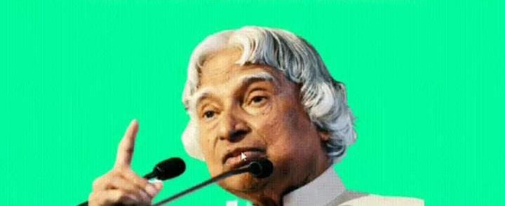

A.P.J ABDUL KALAM

Great Indian scientist politician who played role in the development
missile and nuclear programs.
About The Legend
A.P.J Abdul Kalam, in fullAvul Pakir Jainulabdeen Abdul Kalam,was born October 15,1931,
in Rameswaram,Tamilnadu,India
He served as the 11 president of India from 2002 to 2007.
Kalam earned a degree in aeronautical engineering from the Madras Of Tecnology and
in 1958 joined the Defence Research and Development Organisation (DRDO).
In 1969, he moved to theIndian Space Research Organisation, where he was project director of
the SLV-ITI,the first satellite launch vehicle that was both design and produced in India.
Rejoining DRDO in 1982,kalam planned the program that produced a number of the successful
missiles, whice helped earn him the nickname"Missile Man".
Among those successful was Agni, India's first intermediate-ranga ballistic missile, which inco-
rporated aspectes of the SLV-ITI andwas launched in 1989.
In 1998 kalam put forward a countrywide plan calledTechnology Vision 2020,which he desc-
ribed as a road map for transforming India from a less-developed to a developed society a less-dev-
eloped to a developed society in 20 years.The plan called for,among other measures,incrfeasing ag-
ricultural productivity,emphasizing technology as avehicle for economic growth, andwidending access
to health care and education.
For more Information,check out A.P.J Abdul Kalam on wikipedia. [Developed by @Prioshi Roy]